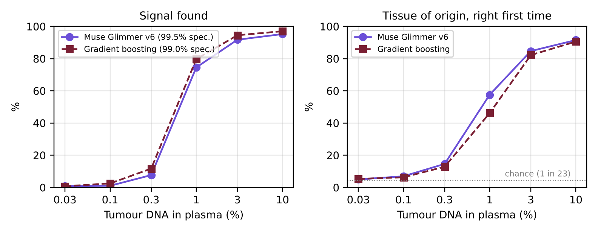

Burotu · burotu.com · github.com/zoukmar/burotu · preprint, November 2026
Large language models read text, code and images, but not biological measurements. We ask whether an open-weight language model can learn to read DNA methylation measured on cell-free DNA (cfDNA) from a blood sample, and answer two questions in plain words: is there a tumour signal, and which tissue does it come from? We adapt Meta's open-weight Muse Glimmer 30B with the recipe that taught language models to see: a small adapter projects 3,148 per-CpG methylation features into 16 soft tokens in the model's embedding space, and the model is fine-tuned with QLoRA (217M trained parameters, 66 minutes on one L40S GPU). The answer is read from the model's own next-token logits. We document all six training runs carried out in one week, including failures (mode collapse, memorisation of blood donors) and the changes that fixed them (two-stage training, pseudo-donors, cross-cohort batch alignment). Trained on 35,000 plasma samples simulated from public data (3,832 tumours from 22 series, 5,728 blood donors from 8 cohorts, 23 tissue classes) and evaluated on people and tumours never seen in training, the final model finds 75% of signals at 1% tumour DNA with 99.5% specificity, and names the right tissue first 58% of the time among 23 classes, against 46% for a gradient-boosting baseline on the same data. These results are on simulated plasma, with a small sanity check on 27 real plasma samples where the language model's alarm does not yet transfer well; the work is a research prototype, not a diagnostic. Code, weights, run reports and a live demo are public.
Tumours shed fragments of their DNA into the bloodstream. Part of that cfDNA carries methylation patterns that differ from those of the blood cells that make up most of healthy plasma, and these patterns are tissue-specific. Targeted methylation sequencing of cfDNA is the basis of multi-cancer early detection tests, which use dedicated classifiers to detect a signal and predict its tissue of origin [1, 2].
Multimodal language models showed that a frozen or lightly tuned language model can learn a new input modality through a small projector that maps encoder outputs into its token embedding space [3]. We apply this idea to a modality with no encoder at all: a vector of methylation levels on a fixed panel of CpG sites. The question is not whether a 30-billion-parameter model is the most efficient classifier for this task (it is not, in compute), but whether a general-purpose open-weight language model can acquire this "sense" quickly, how it compares with a strong classical baseline on the same held-out data, and what goes wrong on the way. The open weights matter: clinical and research labs often cannot send data to a closed API, but can run, inspect and retrain an open model on their own hardware.
This report was written alongside a one-week build (first commit on 26 October 2026, final model on 2 November 2026) for the Meta Global AI Developer Hackathon. We report every run, not only the last one.
All data are public; no patient data were collected. 26,155 methylation samples from 45 datasets (Illumina 450K/EPIC arrays and a whole-genome atlas) were refined into one format on a common panel. The training reference (refined data v2) contains 3,832 tumours from 22 public series (TCGA, TARGET, CGCI and GEO series) mapped to 23 tissue classes, and whole-blood profiles of 5,728 healthy people from 8 GEO cohorts (GSE40279 [4], GSE55763, GSE87571, GSE56105, GSE72680, GSE72775, GSE42861, GSE234190). Classes follow the tissue rather than the AJCC cancer type; counted the AJCC way, the 23 classes cover about 33 cancer categories.
Each array cohort carries its own lab batch: the spread of a site's mean methylation between cohorts is about three times the spread between people of one cohort. Without correction, adding cohorts made every model worse (Section 4). Each blood cohort is therefore moved onto one reference batch (GSE40279) site by site, by shifting its per-site mean while keeping the differences between its people. Two cohorts whose values were off-scale were dropped.
The panel has 3,148 CpG sites that are almost never methylated in blood (mean β below 0.10, 95th percentile below 0.20) and methylated in at least one tumour class, so that a few tumour fragments stand out against the blood background. A plasma sample is simulated by drawing a real healthy person as the background, mixing in a real tumour of the chosen class at a tumour fraction between 0.01% and 10%, and sampling methylated reads binomially at a read depth that varies per CpG (log-normal around 500). People and tumours are split into training, calibration and test sets before simulation and panel selection: 3,683 people for training, 300 for threshold calibration and 1,745 for testing. The simulation works CpG by CpG and ignores read-level patterns, which real assays exploit.
For each CpG, the read counts are turned into a binomial z-score against the healthy background, z = (m − n·μ) / √(n·μ·(1 − μ)), where m is the number of methylated reads, n the depth and μ the mean methylation of that site in the training blood donors only. Three global summaries are appended: the overall excess of methylated reads relative to depth, the share of sites with z above 3, and the mean of the 20 strongest z-scores.
The adapter is a two-layer MLP: layer normalisation of the input, a linear layer to 1,024 units, GELU, dropout 0.1, and a linear layer to 16 × d outputs reshaped into 16 soft tokens of the model's hidden size d, followed by layer normalisation. The soft tokens are inserted between a short text prefix (“Cell-free DNA methylation profile of a blood sample:”) and a question asking whether there is a cancer signal and which organ it most likely comes from. The sample never appears as text.
Figure 1. The sample enters Muse Glimmer as 16 soft tokens produced by a methylation adapter, the way vision projectors feed images to a language model. Signal and tissue are read from the model's next-token logits.
The base model, Muse Glimmer 30B (revision a4e59da5), is loaded in 4-bit NF4; LoRA adapters of rank 16 are added to its language layers following Meta's QLoRA recipe [5, 6]. The training target is the continuation “ no.” for healthy samples and “ yes. Most likely origin: <tissue>.” otherwise, with a cross-entropy loss on the answer tokens. Training has two stages: the adapter alone for 500 steps (learning rate 10−3), then adapter and LoRA together (LoRA learning rate 5·10−5), 1,500 steps in total, batch 16, weight decay 0.01. The training set has 35,000 simulated samples; half of the healthy backgrounds are pseudo-donors, mixtures of two or three real training donors. The final run trained 217,197,726 parameters in 66 minutes on one NVIDIA L40S (48 GB) on Modal.
The model is not asked to generate free text at inference. The signal score is the margin between the logits of “ yes” and “ no” after the question (computed in float32, before the model's logit soft-cap); the detection threshold is set on the 300 calibration people to reach the target specificity. The tissue distribution is a softmax over the log-likelihood of each of the 23 class names as the continuation of “ yes. Most likely origin:”.
The baseline is a gradient-boosted tree classifier trained on the same features and data; its threshold is set on the same calibration people. Every model is scored on the same frozen test set: 4,000 simulated healthy samples from the 1,745 test people, and 966 simulated cancer samples per tumour fraction built from held-out tumours.
Table 1 lists every run. Runs v1–v4 used an earlier 8-class prototype and runs v5 the 20-class v1 data, so their numbers are not directly comparable with v6; they are given to show what each change fixed.
| Run | Date | Change | Outcome (held-out people, 1% tumour DNA) |
|---|---|---|---|
| v1 | 27 Oct | Adapter and LoRA trained jointly from the start | Mode collapse: LoRA learned the answer format faster than the adapter learned to carry the sample; same answer for every input |
| v2 | 28 Oct | Two stages: adapter alone, then adapter + LoRA; 8 classes | Tissue right first time 70% (baseline 57%), but healthy people never seen scored like cancers: the model had learned each training donor's background |
| v3 | 28 Oct | Smaller, regularised adapter | 99.9% specificity, but only 26% of signals found |
| v4 | 29 Oct | Pseudo-donors: half the healthy backgrounds mixed from 2–3 real donors | 42% of signals at 99.7% specificity |
| v5 | 29 Oct | 20 classes | Tissue 60% (baseline 55%); signals 38%: the alarm still failed on new people. Adding more blood cohorts without alignment made it worse |
| v6 | 2 Nov | Refined data v2: 5,728 donors from 8 cohorts aligned on one batch; 23 classes; 35,000 samples | Tissue 58% among 23 (baseline 46%); 75% of signals at 99.5% specificity |
Table 1. The six fine-tuning runs. Full reports: reports/muse_glimmer-v1.json to -v6.json in the repository.
Two lessons stand out. First, the order of learning matters: when the language layers can adapt from step one, they find the shortcut of predicting the most frequent answer before the adapter carries any information (v1). Training the adapter alone first fixes this, as in multimodal projector pre-training [3]. Second, the hardest problem was not cancer but healthy people: a model trained on a few hundred donors learns each donor's background, and healthy people it never saw look unusual (v2–v5). Pseudo-donors helped, but the decisive change was data: many more donors, and the removal of between-lab batch effects that otherwise dominate the signal (v6).

Figure 2. Frozen v2 benchmark: people and tumours never seen in training, simulated plasma, 23 tissue classes. Left: signals found at the calibrated threshold. Right: tissue of origin right first time among 23 classes (chance: 4%).
| Tumour DNA in plasma | 0.3% | 1% | 3% | 10% |
|---|---|---|---|---|
| Signal found, gradient boosting (99.0% specificity) | 12% | 80% | 95% | 97% |
| Signal found, Muse Glimmer v6 (99.5% specificity) | 8% | 75% | 92% | 95% |
| Tissue right first time, gradient boosting | 13% | 46% | 82% | 91% |
| Tissue right first time, Muse Glimmer v6 | 15% | 58% | 85% | 92% |
| Tissue in the top 2, Muse Glimmer v6 | 27% | 71% | 91% | 96% |
| AUC cancer vs healthy, Muse Glimmer v6 | 0.79 | 0.97 | 0.99 | 1.00 |
Table 2. Benchmark v2 (4,000 healthy and 966 cancer samples per tumour fraction). Observed specificity on held-out people: 99.0% (baseline) and 99.5% (Glimmer v6).
At low tumour fractions the fine-tuned language model names the tissue of origin better than the classical baseline (58% vs 46% at 1%), while finding slightly fewer signals at a slightly stricter specificity. At 3% and above both converge. Weak classes are blood cancers (their DNA resembles the blood background), thymus and testis.
On 27 real cfDNA samples measured on methylation arrays (Moss et al. [7]: 12 healthy, 15 cancers), real healthy plasma is not pure blood, and against the whole-blood background every sample crosses the threshold. Re-estimating the background from healthy controls (leaving out the person being scored), as a lab would calibrate a new assay, the baseline finds 12 of 15 cancers and flags none of the 12 healthy people (AUC 0.82). Muse Glimmer v6 also finds 12 of 15 cancers but flags 5 of the 12 healthy people (AUC 0.60): its calibration does not transfer to real plasma as well as the baseline's. Both name the right tissue for 7 of the 11 cancers with a known origin. 27 samples is a sanity check, not a performance figure, but it shows that the language model's alarm needs recalibration on real plasma before it can be trusted.
The language model, the prompt and the serving code are unchanged across questions; the question lives in the adapter and its labels. The trained model is served behind an authenticated API on a scale-to-zero GPU, and a public demo reads lab files live (quality control, classical models, Glimmer, a consensus, an explanation of which sites lit up, and a research report for the requesting doctor written by Muse Spark). With new labels and about an hour of GPU, the same engine could be retrained for other questions on the same measurements: treatment follow-up on serial draws, relapse, which organ releases DNA after injury, or biological age from epigenetic clocks. These are directions, not results.
All performance figures come from simulated plasma built from array profiles of tumours and whole blood, CpG by CpG, without read-level patterns, fragment lengths or the non-blood components of healthy plasma; real sequenced plasma will behave differently. The real-plasma check covers 27 samples. The cohorts are public array data with their own selection biases, and some classes rest on few tumours. Batch alignment was done on blood cohorts only. The model is large for the task: a classical model is far cheaper, and the value of the language model lies in reuse and in tissue naming at low tumour fractions, not in efficiency. Burotu is a research prototype; it is not a medical device and must not be used for any clinical decision.
Code (pipeline, training, serving, benchmark, demo site), every run report and this paper: github.com/zoukmar/burotu (AGPL-3.0). Weights (adapter and LoRA, v1–v6; the base model is loaded separately): huggingface.co/zoukmar75/burotu-glimmer (Apache-2.0). Live demo: burotu.com. Video (3 min): youtu.be/LQVoz8USAHo.